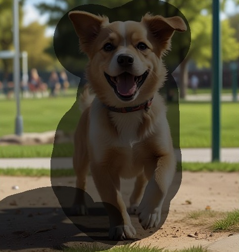

Tips til Repaint-funktionen
Ved at bruge Inpaint-funktionen i AiCasso kan du ændre specifikke områder af et billede ved at udfylde eller erstatte dem. Uanset om du ønsker at forbedre et eksisterende billede eller helt ændre visse sektioner, gør AiCasso processen ligetil. Vælg blot de områder, du vil ændre, giv en prompt, og lad AiCasso udføre sin magi.
Muligheder:
Styrke:
Styrkeindstillingen kontrollerer, hvor meget af det originale billede der ændres af prompten. Den spænder fra 0 til 1. En værdi på 0 betyder, at det originale billede knap ændres, mens en værdi på 1 betyder, at det originale billede næsten helt erstattes af de nye detaljer, du beskriver. Tænk på det som hvor 'stærke' dine ændringer vil være.
Forbedre stil:
Indstillingen for at forbedre stil giver dig mulighed for at tilføje en specifik kunstnerisk eller tematisk stil til de ændrede områder. Du kan vælge mellem en række stilarter som:
Sådan fungerer det:
Mal de områder, der skal udfyldes eller erstattes:

Eksempler:
Prompt 1: "Et hyper-realistisk billede af en kat i parken."
Resultat: AiCasso vil generere en hyper-realistisk kat i parken, der fylder de malede områder sømløst med realistiske teksturer og belysning.
Prompt 2: "En kat i parken med en hyper-realistisk stil og en styrke på 0.7."
Resultat: Dette vil skabe en hyper-realistisk kat i parken, med modificeringsstyrken indstillet til 0.7, der glider de nye elementer glat ind i det originale billede.
Forbedre stilarter
Er du ikke sikker på, hvilken stil du skal vælge? Bare rolig! Nævn blot en hvilken som helst stil, der kommer til at tænke på, selvom den ikke er grammatisk korrekt, så finder AiCasso ud af det fra listen over tilgængelige forbedringsstilarter.
- Standard: En afbalanceret og neutral stil uden nogen specifik kunstnerisk indflydelse.
- Forbedre: Forbedrer let detaljer og den overordnede æstetik.
- Cinematisk Diva: Tilføjer en dramatisk, filmisk effekt med stærke lyskontraster.
- Abstrakt Ekspressionisme: Fremhæver abstrakte former og levende farvesprøjt.
- Akademia: Tilføjer et lærdoms- og klassisk præg til billedet.
- Actionfigur: Genererer billeder med den overdrevne og dynamiske stil fra actionfigurer.
- Bedårende 3D Karakter: Producerer søde, tegneserieagtige 3D-karakterer.
- Bedårende Kawaii: Fremhæver den søde og charmerende stil, der er typisk for Kawaii-kultur.
- Art Deco: Bruger den geometriske og dekorative stil fra Art Deco-perioden.
- Art Nouveau: Tilføjer flydende linjer og naturinspirerede elementer, typisk for Art Nouveau.
- Astral Aura: Skaber en mystisk og overjordisk atmosfære.
- Avant Garde: Fokuserer på innovative og eksperimentelle kunstneriske udtryk.
- Barok: Bruger den dramatiske, detaljerede og udsmykkede stil fra barokken.
- Bauhaus Stil Plakat: Reflekterer de minimalistiske og funktionelle designprincipper fra Bauhaus.
- Blueprint Schematic Drawing: Producerer billeder, der ligner tekniske blåtryk.
- Karikatur: Genererer overdrevne, tegneserieagtige portrætter.
- Cel-Shaded Art: Bruger de flade, stærke farver, der er typiske for cel-shaded animation.
- Karakterdesignark: Fokuserer på rene og klare karakterdesigns, der er egnede til animation.
- Klassicisme Kunst: Efterligner den raffinerede og idealiserede kunststil fra den klassiske antik.
- Farvefelt Maleri: Har store områder af ensfarvet for at skabe en flad farveflade.
- Farvet Blyant Kunst: Efterligner teksturen og udseendet af farvede blyanttegninger.
- Konceptuel Kunst: Prioriterer ideer og koncepter over æstetiske eller materielle bekymringer.
- Konstruktivisme: Reflekterer den industrielle, geometriske stil fra den konstruktivistiske bevægelse.
- Kubisme: Nedbryder objekter til geometriske former og præsenterer dem i abstrakte former.
- Dadaisme: Fremhæver absurditet, irrationalitet og anti-kunst æstetik.
- Mørk Fantasi: Skaber en dyster, gotisk atmosfære med mørke og uhyggelige elementer.
- Mørk Stemning: Bruger lav belysning og skygge til at skabe en dyster stemning.
- DMT Kunst: Har levende, psykedeliske visuelle elementer inspireret af DMT-oplevelser.
- Doodle Kunst: Fremhæver finurlige og legende tegneserier, ofte indviklede og detaljerede.
- Dobbelt Eksponering: Kombinerer to billeder til ét, hvilket skaber en surrealistisk, lagdelt effekt.
- Dryppende Malingsplatter: Bruger splattet og dryppende maling til at skabe dynamiske og kaotiske kompositioner.
- Ekspressionisme: Prioriterer følelsesmæssig udtryk frem for realistisk repræsentation, ofte ved at bruge stærke farver og dramatiske former.
- Fadede Polaroid Foto: Efterligner det ældede og nostalgiske udseende af et fadet Polaroid-fotografi.
- Fauvisme: Bruger levende, unaturlige farver og stærke penselstræk, inspireret af Fauvist-bevægelsen.
- Flad 2D: Fremhæver enkle, flade designs med minimal skygge eller dybde, ofte i en tegneseriestil.
- Fortnite Stil: Reflekterer den levende, tegneserieagtige kunststil, der er typisk for Fortnite-videospillet.
- Futurisme: Fokuserer på dynamisk bevægelse, energi og skildringen af fremtidige teknologier.
- Glitchcore: Fremhæver digitale fejl og glitches som en kunstnerisk stil, ofte med forvrængede visuelle elementer.
- Glo-Fi: Bruger blød, glødende belysning til at skabe en drømmende, etereal atmosfære.
- Googie Stil: Reflekterer de futuristiske og rumalderdesigntrends fra midten af det 20. århundrede.
- Graffiti Kunst: Bruger de levende, gade-stil æstetik, der er typisk for graffiti og urbane vægmalerier.
- Harlem Renaissance Kunst: Reflekterer de rige kulturelle og kunstneriske udtryk fra Harlem Renaissance.
- High Fashion: Fremhæver den slanke, sofistikerede og avantgarde æstetik fra high fashion.
- Idyllisk: Skaber en fredelig, rolig og ofte pastoral atmosfære.
- Impressionisme: Bruger løse penselstræk og levende farver til at fange lys- og atmosfæreffekter.
- Infografisk Tegning: Fremhæver klare, visuelt tiltalende layouts til præsentation af information grafisk.
- Blæk Dryppende Tegning: Bruger blæk til at skabe flydende, dryppende effekter i en tegning.
- Japansk Blæk Tegning: Efterligner de traditionelle penselstræksteknikker og æstetik fra japansk blækkunst.
- Knolling Fotografi: Fremhæver den pæne og organiserede arrangement af objekter, ofte fotograferet ovenfra.
- Lys Glad Atmosfære: Bruger lyse farver og belysning til at skabe en glad og opløftende atmosfære.
- Logo Design: Fokuserer på at skabe rene, genkendelige logoer og branding-elementer.
- Luxuriøs Elegance: Fremhæver sofistikering og luksus, ofte med rige teksturer og materialer.
- Makro Fotografi: Fokuserer på ekstrem nærbilleder, ofte afslørende indviklede detaljer, der ikke er synlige for det blotte øje.
- Mandala Kunst: Skaber indviklede, symmetriske mønstre inspireret af traditionelle mandala-designs.
- Marker Tegning: Efterligner de stærke, levende linjer og farver, der er typiske for marker-tegninger.
- Middelalderlig: Reflekterer kunst- og designæstetikken fra middelalderen.
- Minimalisme: Fremhæver enkelhed og reduktion af former til deres essentielle elementer.
- Neo-Barok: Genoplive den overdådige, dramatiske stil fra barokperioden med moderne indflydelser.
- Neo-Byzantinsk: Kombinerer den udsmykkede, religiøse kunststil fra det Byzantinske Imperium med nutidige elementer.
- Neo-Futurisme: Fokuserer på futuristiske designs, ofte med slanke, højteknologiske æstetik.
- Neo-Impressionisme: Bruger små, distinkte farveprikker til at skabe billeder, inspireret af den neo-impressionistiske bevægelse.
- Neo-Rokoko: Genoplive den udsmykkede, dekorative stil fra rokoko-perioden med moderne drejninger.
- Neoklassicisme: Efterligner kunst- og designæstetikken fra klassisk antik, med fokus på harmoni og enkelhed.
- Op Kunst: Skaber optiske illusioner og effekter gennem brug af geometriske mønstre og kontraster.
- Udsmykket og Indviklet: Fokuserer på meget detaljerede, udsmykkede designs med fokus på dekoration.
- Blyant Skitse Tegning: Efterligner teksturen og udseendet af blyantskitser.
- Pop Kunst: Bruger stærke farver og billeder inspireret af populærkultur og massemedier.
- Rokoko: Reflekterer den udsmykkede, dekorative kunststil fra rokoko-perioden med fokus på lethed og elegance.
- Silhuet Kunst: Bruger stærke kontraster mellem lys og skygge til at skabe dristige, silhuet-baserede billeder.
- Enkel Vektor Kunst: Fremhæver rene, geometriske former og flade farver, typisk for vektor kunst.
- SketchUp: Efterligner udseendet og følelsen af 3D-modeller skabt med SketchUp-software.
- Steampunk: Kombinerer æstetik fra den victorianske æra med dampdrevne teknologier og skaber en retro-futuristisk stil.
- Surrealisme: Blander virkelighed og drømmeagtige billeder for at skabe surrealistiske, fantastiske scener.
- Suprematisme: Fokuserer på grundlæggende geometriske former og begrænsede farvepaletter, inspireret af suprematistbevægelser.
- Terragen: Efterligner de realistiske, computer-genererede landskaber skabt med Terragen-software.
- Rolig Afslappende Atmosfære: Bruger bløde farver og beroligende billeder til at skabe et fredeligt og roligt miljø.
- Sticker Designs: Fokuserer på at skabe legende, tegneserieagtige billeder, der er egnede til klistermærker.
- Vibrant Rim Light: Fremhæver lysende, kantbelysning omkring emner for at skabe en slående, levende effekt.
- Volumetrisk Belysning: Bruger lysstråler og atmosfæriske effekter til at skabe dybde og dimension.
- Akvarel: Efterligner de bløde, flydende teksturer af akvarelmalerier.
- Finurlig og Legesyg: Fokuserer på lette, fantasifulde og ofte quirky billeder.
- Skarp: Forbedrer klarhed og kantdefinition for et skarpere udseende.
- Masterpiece: Fremhæver høj kvalitet, detaljeret og poleret kunstnerisk output.
- Fotografi: Stræber efter en realistisk og livagtig fotografisk kvalitet.
- Negativ: Inverterer farver for at skabe en fotografisk negativ effekt.
- Reklamer - Reklame: Fokuserer på rene, professionelle visuelle elementer, der er egnede til reklame.
- Reklamer - Automotive: Tilpasser den visuelle stil til dynamisk og poleret bilreklame.
- Reklamer - Corporate: Fremhæver slanke, professionelle designs, der er egnede til virksomhedsmiljøer.
- Reklamer - Mode Editorial: Fremhæver det stilfulde, high-fashion look, der bruges i modeeditorials.
- Reklamer - Madfotografi: Optimerer billeder til det levende og appetitlige look, der er typisk for madfotografi.
- Reklamer - Gourmet Madfotografi: Fremhæver de rige, detaljerede æstetikker i gourmet madfotografi.
- Reklamer - Luksus: Fokuserer på den overdådige, high-end stil, der er egnet til luksusmærker.
- Reklamer - Ejendom: Fremhæver de rene og indbydende visuelle elementer, der er typiske for ejendomsmæssig reklame.
- Reklamer - Detailhandel: Fremhæver den tiltalende, forbrugerfokuserede stil, der er egnet til detailreklame.
- Hyperrealisme: Stræber efter en ekstremt detaljeret, livagtig visuel stil.
- Pointillisme: Bruger små, distinkte farveprikker til at skabe et billede, inspireret af pointillistbevægelser.
- Psykedelisk: Fremhæver levende farver og surrealistiske visuelle elementer inspireret af psykedelisk kunst.
- Renaissance: Reflekterer den harmoniske, klassiske stil fra renæssancekunst.
- Typografi: Fokuserer på kreativ og kunstnerisk brug af tekst og skrifttyper.
- Futuristisk Biomekanisk: Kombinerer futuristiske og biomekaniske elementer for at skabe en højteknologisk, organisk stil.
- Futuristisk Biomekanisk Cyberpunk: Sammenfletter biomekaniske og cyberpunk æstetikker for et gritty, futuristisk look.
- Futuristisk Cybernetisk: Fokuserer på højteknologiske, cybernetiske visuelle elementer.
- Futuristisk Cybernetisk Robot: Fremhæver robotiske og cybernetiske designs med et futuristisk præg.
- Futuristisk Cyberpunk Bybillede: Reflekterer de gritty, neonlysede bybilleder, der er typiske for cyberpunk kunst.
- Futuristisk Sci-Fi: Fokuserer på futuristiske og science fiction-inspirerede æstetikker.
- Futuristisk Retro Cyberpunk: Kombinerer retro og cyberpunk elementer for en nostalgisk, men futuristisk stil.
- Futuristisk Retro: Sammenfletter futuristiske visuelle elementer med retro designelementer.
- Futuristisk Vaporwave: Fremhæver de nostalgiske, surrealistiske visuelle elementer, der er typiske for Vaporwave kunst.
- Spil Boble: Fokuserer på en legende, bobleagtig æstetik, der ofte ses i casual spil.
- Spil Cyberpunk: Sammenfletter spildesign elementer med cyberpunk æstetik.
- Spil Kamp: Reflekterer den dynamiske, intense stil, der er typisk for kampspil.
- Spil GTA: Efterligner den gritty, urbane stil, der er typisk for Grand Theft Auto-spil.
- Spil Mario: Fokuserer på den levende, tegneserieagtige stil, der er typisk for Mario-spil.
- Spil Minecraft: Efterligner den blokagtige, pixeliserede stil, der er typisk for Minecraft.
- Spil Pokemon: Reflekterer den levende, anime-inspirerede stil, der er typisk for Pokémon-spil.
- Spil Retro Arkade: Fremhæver den nostalgiske, pixeliserede stil, der er typisk for retro arkadespil.
- Spil RPG Fantasi: Reflekterer de detaljerede, fantasy-inspirerede æstetikker, der er typiske for RPG-spil.
- Spil Strategi: Fokuserer på det rene, funktionelle design, der er typisk for strategispil.
- Spil Streetfighter: Efterligner den dristige, dynamiske stil, der er typisk for Street Fighter-spil.
- Spil Zelda: Reflekterer den fantasy-inspirerede stil, der er typisk for Zelda-spil.
- Diverse Arkitektonisk: Fokuserer på rene, præcise arkitektoniske gengivelser.
- Diverse Disco: Fremhæver de levende, neonlysede æstetikker, der er typiske for disco-kultur.
- Diverse Drømmescene: Skaber surrealistiske, drømmeagtige miljøer.
- Diverse Dystopisk: Reflekterer de gritty, dystre visuelle elementer, der er typiske for dystopiske indstillinger.
- Diverse Eventyr: Fremhæver de finurlige, magiske elementer, der er typiske for eventyr.
- Diverse Gotisk: Reflekterer den mørke, udsmykkede stil, der er typisk for gotisk kunst og arkitektur.
- Diverse Grunge: Fremhæver de gritty, rå æstetikker, der er typiske for grunge-kultur.
- Diverse Horror: Fokuserer på mørke, uhyggelige og foruroligende visuelle elementer, der er typiske for horror.
- Diverse Kawaii: Reflekterer den søde, charmerende stil, der er typisk for Kawaii-kultur.
- Diverse Lovecraftian: Fremhæver den uhyggelige, kosmiske horror, der er typisk for Lovecraftiansk fiktion.
- Diverse Makaber: Fokuserer på mørke, morbide og foruroligende temaer.
- Diverse Manga: Efterligner den dristige, dynamiske stil, der er typisk for manga.
- Diverse Metropol: Reflekterer de slanke, urbane æstetikker, der er typiske for moderne metropoler.
- Diverse Minimalistisk: Fremhæver enkelhed og reduktion af former til deres essentielle elementer.
- Diverse Monokrom: Fokuserer på billeder skabt i varierende nuancer af en enkelt farve.
- Diverse Nautisk: Reflekterer de maritime-inspirerede æstetikker, der er typiske for nautiske temaer.
- Diverse Rum: Fremhæver de enorme, overjordiske visuelle elementer, der er typiske for rumindstillinger.
- Diverse Glasmaleri: Efterligner de indviklede, farverige designs, der er typiske for glasmaleri.
- Diverse Techwear Mode: Fokuserer på de futuristiske, funktionelle æstetikker, der er typiske for techwear mode.
- Diverse Tribal: Reflekterer de dristige, kulturelle æstetikker, der er typiske for tribal kunst.
- Diverse Zentangle: Fremhæver indviklede, gentagne mønstre, der er typiske for Zentangle kunst.
- Papercraft Collage: Bruger klippet papir til at skabe lagdelte, teksturerede collager.
- Papercraft Flad Papirskæring: Fremhæver flade, klippede papirdesigns.
- Papercraft Kirigami: Fokuserer på de indviklede, foldede designs, der er typiske for Kirigami.
- Papercraft Papmaché: Bruger papmaché til at skabe teksturerede, tredimensionale former.
- Papercraft Papir Quilling: Fremhæver de delikate, rullede papirdesigns, der er typiske for papir quilling.
- Papercraft Papirskæring Collage: Kombinerer klippede papir-elementer for at skabe lagdelte collager.
- Papercraft Papirskæring Skyggeboks: Bruger lagdelte papirskæringer til at skabe tredimensionale skydebokse.
- Papercraft Stacked Papirskæring: Fokuserer på lagdelte, stablede papirdesigns.
- Papercraft Tykk Lagdelt Papirskæring: Fremhæver det dimensionelle, lagdelte udseende, der er typisk for tykke papirskæringsdesigns.
- Foto Alien: Fokuserer på surrealistiske, udenjordiske visuelle elementer.
- Foto Film Noir: Fremhæver de mørke, stemningsfulde æstetikker, der er typiske for film noir.
- Foto Glamour: Fremhæver det polerede, stilfulde look, der er typisk for glamourfotografi.
- Foto HDR: Bruger høj dynamisk rækkevidde (HDR) til at skabe billeder med et bredt lys- og farvespektrum.
- Foto iPhone Fotografisk: Efterligner det rene, moderne look, der er typisk for iPhone-fotografi.
- Foto Lang Eksponering: Bruger lang eksponering til at skabe dynamiske, bevægelsesudviskede effekter.
- Foto Neon Noir: Kombinerer neonlys med de mørke, stemningsfulde æstetikker fra noir.
- Foto Silhuet: Fokuserer på stærke kontraster mellem lys og skygge for at skabe silhuet-baserede billeder.
- Foto Tilt Shift: Bruger tilt-shift effekter til at skabe et miniaturiseret, legetøjsagtigt look.
- 3D Model: Fokuserer på det rene, detaljerede look, der er typisk for 3D-modeller.
- Analog Film: Efterligner det kornede, teksturerede look, der er typisk for analog filmfotografi.
- Anime: Fremhæver den levende, dynamiske stil, der er typisk for anime.
- Cinematisk: Skaber en dramatisk, filmisk effekt med stærk belysning og kompositioner.
- Comic Book: Bruger dristige linjer og levende farver, der er typiske for tegneseriekunst.
- Craft Clay: Efterligner det teksturerede, håndlavede look af ler-modeller.
- Digital Kunst: Fokuserer på ren, poleret digital kunst.
- Fantasy Kunst: Fremhæver de detaljerede, fantasifulde visuelle elementer, der er typiske for fantasy kunst.
- Isometrisk: Bruger en isometrisk perspektiv til at skabe et tredimensionelt look.
- Linje Kunst: Fokuserer på rene, skarpe linjer for at skabe detaljerede tegninger.
- Low Poly: Bruger low-polygon 3D-modeller til at skabe et minimalistisk, geometrisk look.
- Neonpunk: Kombinerer neonlys med de gritty æstetikker fra cyberpunk.
- Origami: Fokuserer på de indviklede, foldede designs, der er typiske for origami.
- Fotografisk: Stræber efter realistiske, livagtige visuelle elementer.
- Pixel Kunst: Bruger pixeliserede designs til at skabe et retro, videospil-inspireret look.
- Tekstur: Fokuserer på rige, detaljerede teksturer for at forbedre visuel dybde.